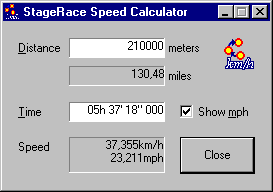

StageRace comes with the Speed Calculator tool.
From within StageRace the Speed Calculator can be started through in the menu.

Speed Calculator
With this tool speed can be calculated quickly and easy from distance and time.
Pay attention that the times have to be entered from the left to the right side. Thus first tens of hours, then hours, tens of minutes, minutes, etcetera. The maximal accuracy is 1/1000th of a second, in accordance with StageRace.
The distance has to be entered in meters.
The result will always be given with a maximum accuracy of five digits in total, either before or after the decimal comma.
By selecting Show mph you can get the entered distance and the calculated speed in a miles based value.